<title>La carta del lunes</title>
<meta name="claude:viewport-fit-sides" content="cover">
<link rel="stylesheet" href="https://fonts.googleapis.com/css2?family=Cormorant+Garamond:ital,wght@1,500&family=Inter:wght@400;500&display=swap">
<style>
  /* Una columna de lectura con las fotos de la app real en filas que se apilan en el móvil. */
  :root {
    --papel: #f3ede2; --papel-2: #ebe3d4; --tinta: #2b2620; --tinta-2: #5a5247; --tinta-3: #8a8174;
    --linea: #d9cfbd; --oliva: #4f6b4a; --terracota: #b46a4a;
    --serif: 'Cormorant Garamond', 'Iowan Old Style', Georgia, serif;
    --sans: 'Inter', system-ui, -apple-system, 'Segoe UI', sans-serif;
  }
  @media (prefers-color-scheme: dark) { :root:not([data-theme="light"]) {
    --papel: #1f1c18; --papel-2: #2a2621; --tinta: #efe8dc; --tinta-2: #cfc6b7; --tinta-3: #9c9284;
    --linea: #3d372f; --oliva: #9db894; --terracota: #e0957a; color-scheme: dark; } }
  :root[data-theme="dark"] {
    --papel: #1f1c18; --papel-2: #2a2621; --tinta: #efe8dc; --tinta-2: #cfc6b7; --tinta-3: #9c9284;
    --linea: #3d372f; --oliva: #9db894; --terracota: #e0957a; color-scheme: dark; }
  body { background: var(--papel); color: var(--tinta); font-family: var(--sans); font-size: 15px; line-height: 1.55;
    padding-left: max(16px, env(safe-area-inset-left, 0px)); padding-right: max(16px, env(safe-area-inset-right, 0px)); padding-block: 32px 64px; }
  main { max-width: 1040px; margin: 0 auto; display: flex; flex-direction: column; gap: 44px; }
  h1, h2 { font-family: var(--serif); font-style: italic; font-weight: 500; margin: 0; text-wrap: balance; line-height: 1.1; }
  h1 { font-size: 40px; }
  h2 { font-size: 28px; }
  p { margin: 0; max-width: 68ch; color: var(--tinta-2); }
  .eti { font-size: 11px; letter-spacing: .14em; text-transform: uppercase; color: var(--tinta-3); }
  section { display: flex; flex-direction: column; gap: 14px; }
  .fotos { display: flex; flex-wrap: wrap; gap: 18px; align-items: flex-start; }
  figure { margin: 0; display: flex; flex-direction: column; gap: 8px; min-width: 0; }
  figure.m { flex: 0 1 230px; }
  figure.e { flex: 1 1 520px; }
  figure img { display: block; width: 100%; border-radius: 10px; border: 1px solid var(--linea); }
  figcaption { font-size: 13px; color: var(--tinta-3); line-height: 1.4; }
  .opcion { display: flex; flex-direction: column; gap: 12px; padding-top: 14px; border-top: 1px solid var(--linea); }
  .opcion h3 { margin: 0; font-family: var(--serif); font-style: italic; font-weight: 500; font-size: 22px; }
  .reco { background: var(--papel-2); border-radius: 12px; padding: 14px 16px; display: flex; flex-direction: column; gap: 4px; }
  .reco b { font-weight: 500; color: var(--oliva); }
  ul { margin: 0; padding-left: 20px; color: var(--tinta-2); max-width: 68ch; display: flex; flex-direction: column; gap: 4px; }
  table { border-collapse: collapse; font-size: 13px; font-variant-numeric: tabular-nums; }
  td, th { padding: 6px 12px 6px 0; text-align: left; border-bottom: 1px solid var(--linea); }
  th { font-weight: 500; color: var(--tinta-3); }
  .tabla { overflow-x: auto; }
</style>

<main>
  <header style="display:flex;flex-direction:column;gap:10px">
    <div class="eti">PACE · motor de la semana · 17 oct. 2026</div>
    <h1>La carta del lunes</h1>
    <p>El motor está montado: aprende las cuatro cosas que elegiste, hace como mucho dos cambios por semana y solo con PACE completo (abierto hasta v1). Estas fotos son la app real con una carta de ejemplo, el lunes 19 de octubre a las 8:30. La carta es la ventana que elegiste (B). Quedan dos cosas por decidir, al final.</p>
  </header>

  <section>
    <div class="eti">Ya montado, como lo elegiste</div>
    <h2>La semana con dos cambios, y la que no cambia nada</h2>
    <div class="fotos">
      <figure class="m">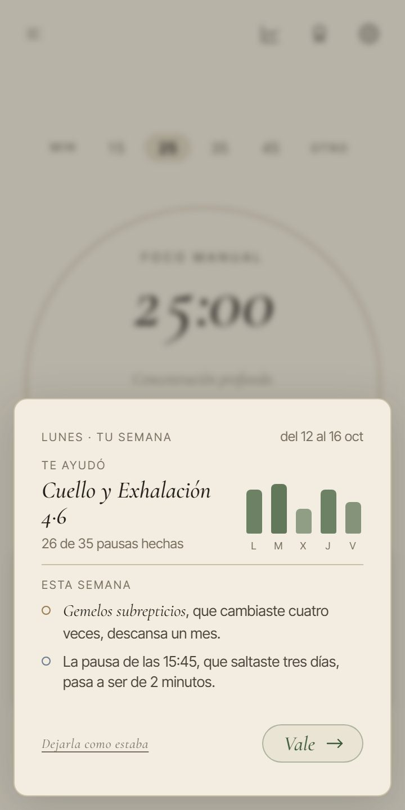<figcaption>Dos cambios. 360 × 718, tu móvil.</figcaption></figure>
      <figure class="m">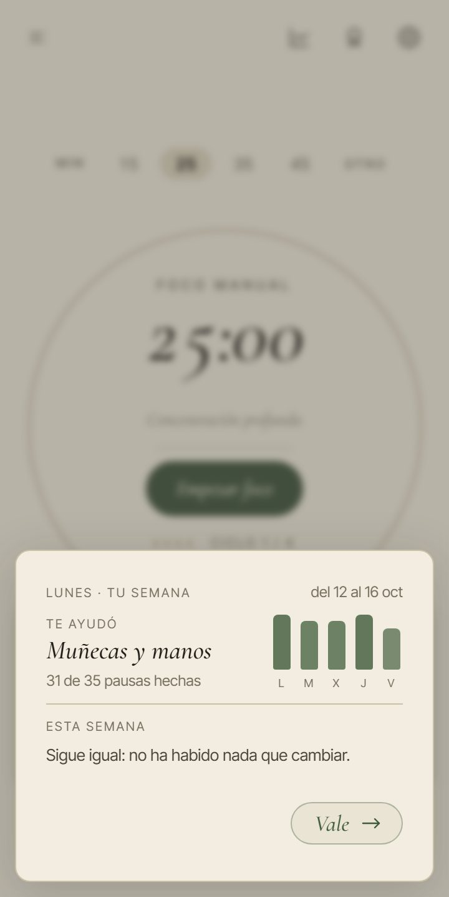<figcaption>Sin cambios: «Sigue igual» y solo «Vale».</figcaption></figure>
      <figure class="m">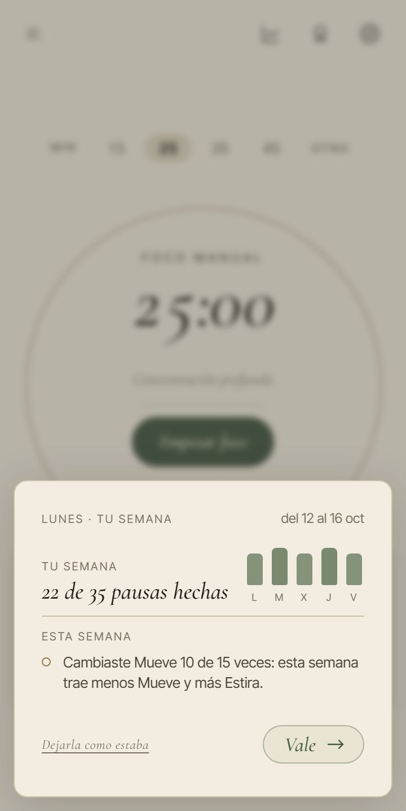<figcaption>Si nadie dijo «Sí» a «¿Te ayudó?», arriba van las pausas hechas en grande.</figcaption></figure>
      <figure class="e">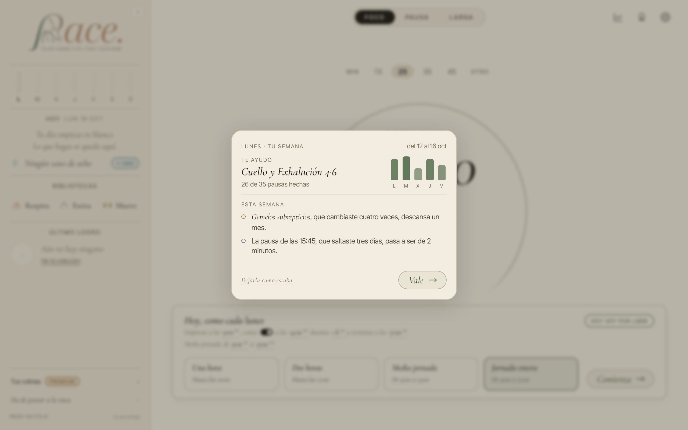<figcaption>1280 × 800.</figcaption></figure>
    </div>
    <ul>
      <li>En el móvil la ventana sale desde abajo, como todas las ventanas de la app; en tu maqueta salía centrada.</li>
      <li>Cabe sin scroll en todas: la más alta mide 387 px a 360 × 718 y 381 px a 360 × 640.</li>
      <li>El punto de cada cambio lleva el color de su módulo: Gemelos es de Mueve; la pausa de las 15:45 servía Estira.</li>
    </ul>
  </section>

  <section>
    <div class="eti">Pregunta 1</div>
    <h2>Si hay un cambio y también la pregunta de tus horas</h2>
    <p>Con «Los lunes empiezas a las 9:40», la carta pregunta en vez de cambiar, porque tus horas no cambian nunca solas. Cuando además hay un cambio de rutinas, caben dos formas.</p>
    <div class="opcion">
      <h3>A · Todo en la misma ventana</h3>
      <div class="fotos">
        <figure class="m">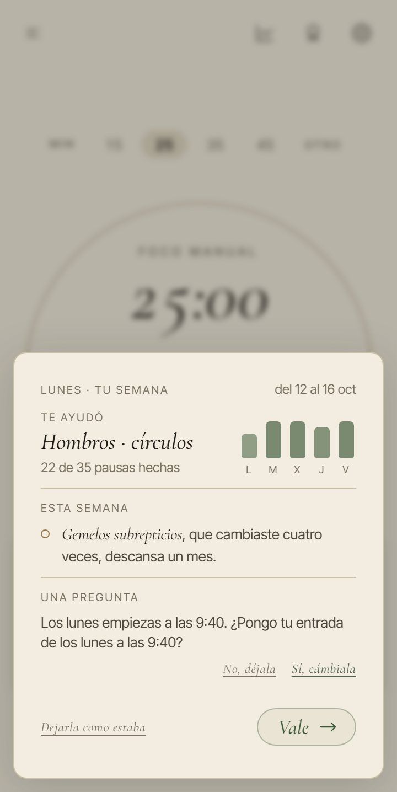<figcaption>La pregunta con su «No, déjala» y «Sí, cámbiala», y debajo «Vale» para el cambio.</figcaption></figure>
        <figure class="m">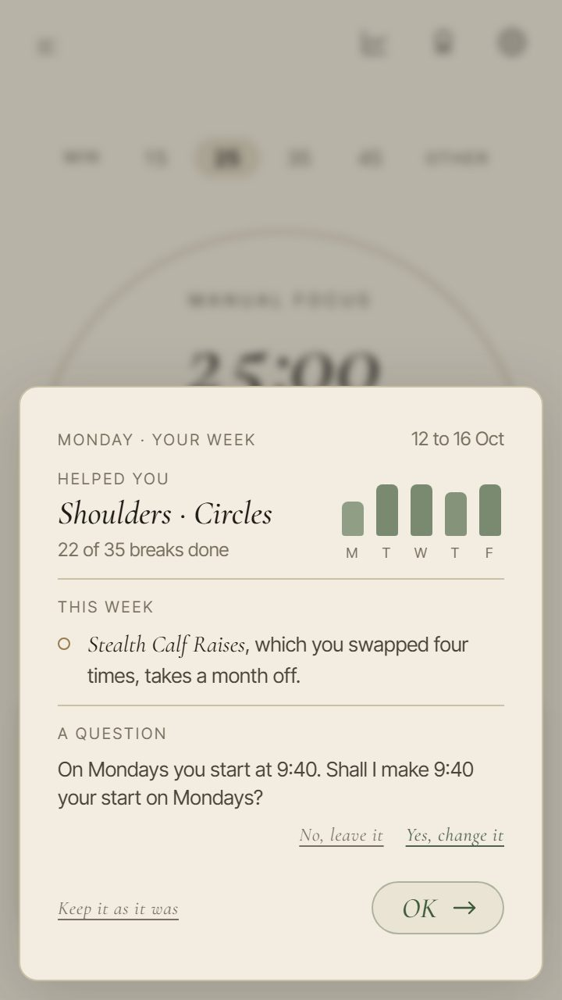<figcaption>En inglés, a 360 × 640.</figcaption></figure>
        <figure class="e">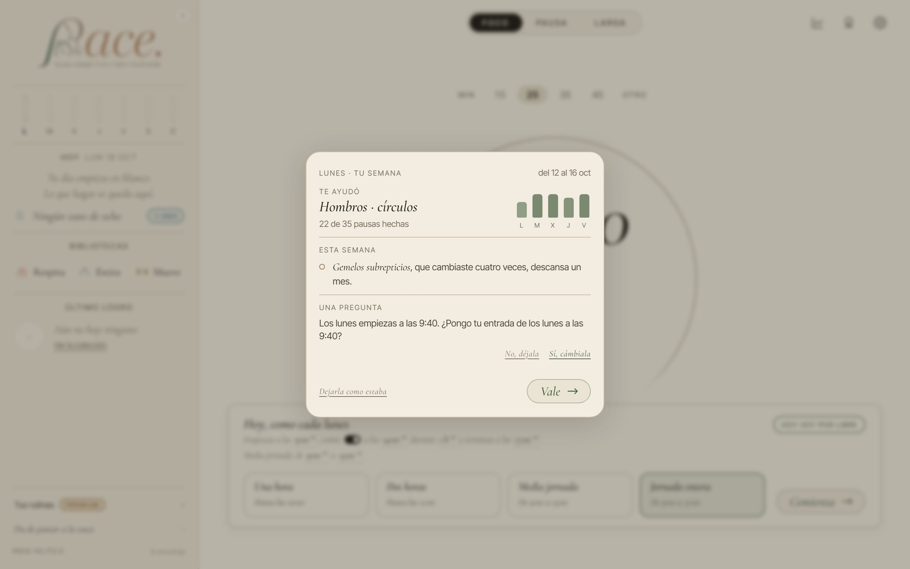<figcaption>1280 × 800.</figcaption></figure>
      </div>
    </div>
    <div class="opcion">
      <h3>B · Primero el cambio, después la pregunta</h3>
      <div class="fotos">
        <figure class="m">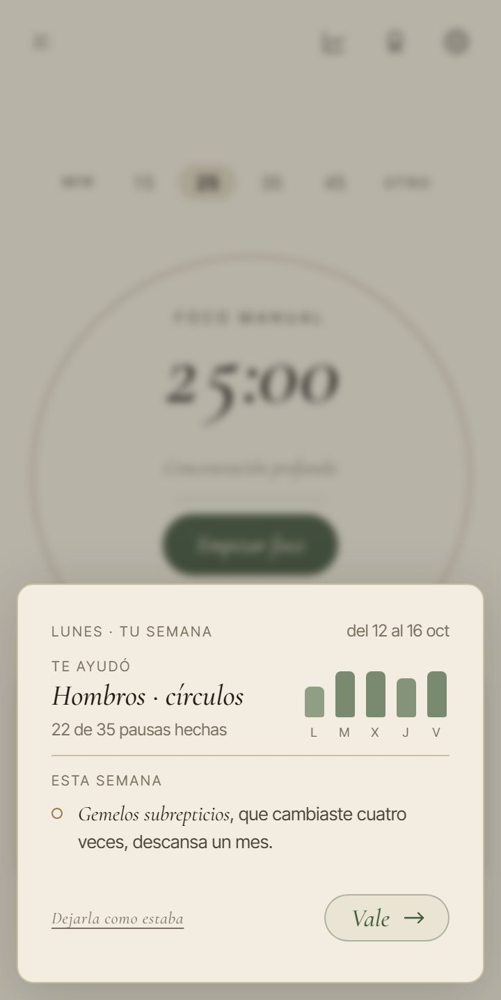<figcaption>1 · El cambio con «Vale».</figcaption></figure>
        <figure class="m">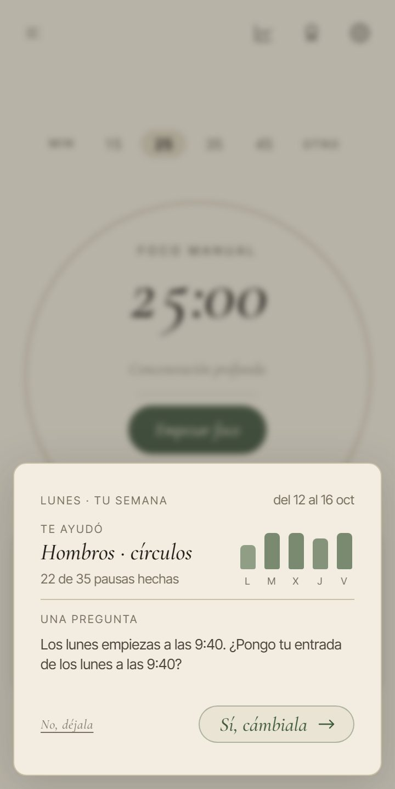<figcaption>2 · Al pulsarlo, la pregunta en la misma ventana.</figcaption></figure>
        <figure class="e">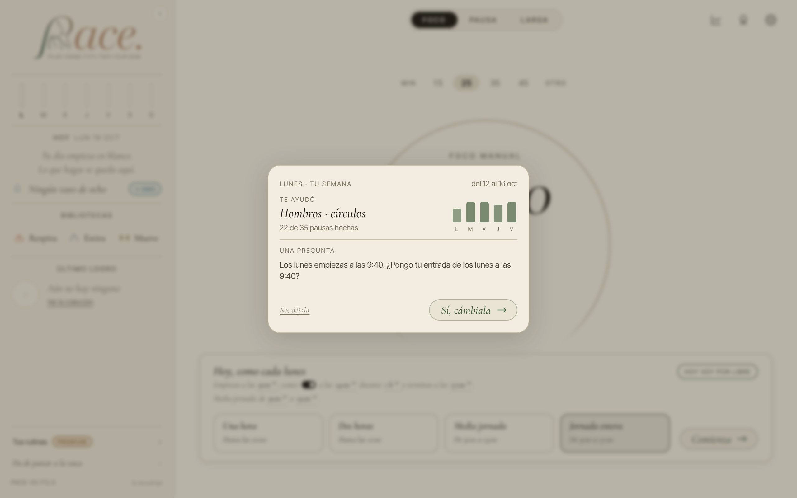<figcaption>El segundo paso, 1280 × 800. Si solo hay pregunta, sale este directamente (en A y en B).</figcaption></figure>
      </div>
    </div>
    <div class="reco"><span class="eti">Recomendación</span><span><b>B.</b> Cada ventana pide una sola cosa, como los ejemplos de tu página, y en A «Vale» parece que también contesta la pregunta. B mide 281 px a 360 × 640; A, 381.</span></div>
  </section>

  <section>
    <div class="eti">Pregunta 2</div>
    <h2>Lo aprendido, en «Tu semana»</h2>
    <p>Desde Ajustes, «Tu semana» enseña lo que PACE ha aprendido y cada cosa se puede olvidar. Lo que descansa vuelve solo a las cuatro semanas.</p>
    <div class="opcion">
      <h3>A · La lista, debajo de tus horas</h3>
      <div class="fotos">
        <figure class="m">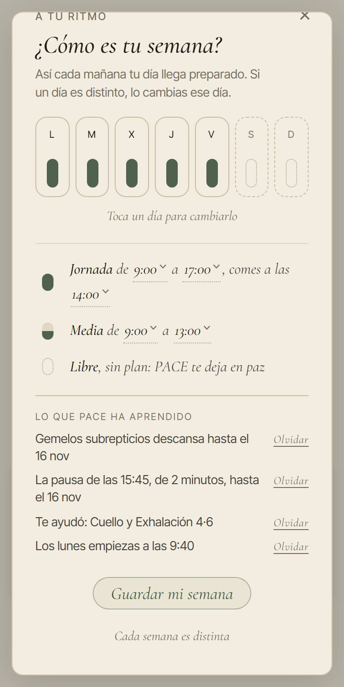<figcaption>Cada cosa con su «Olvidar». La hoja pide 27 px de scroll a 360 × 718 y 105 a 360 × 640.</figcaption></figure>
        <figure class="e">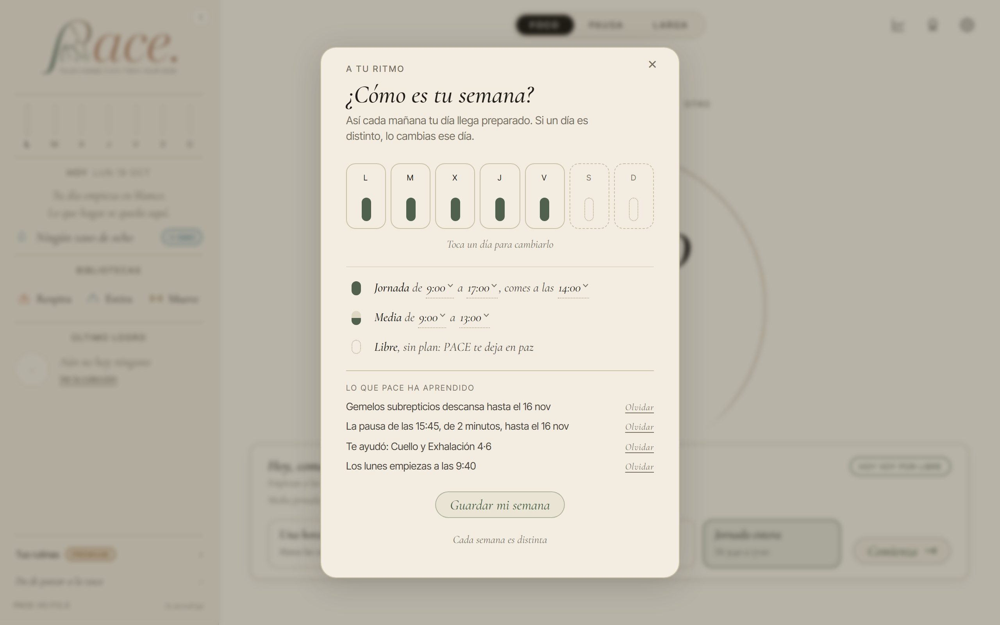<figcaption>1280 × 800: 12 px de scroll.</figcaption></figure>
      </div>
    </div>
    <div class="opcion">
      <h3>B · Una línea que la abre</h3>
      <div class="fotos">
        <figure class="m">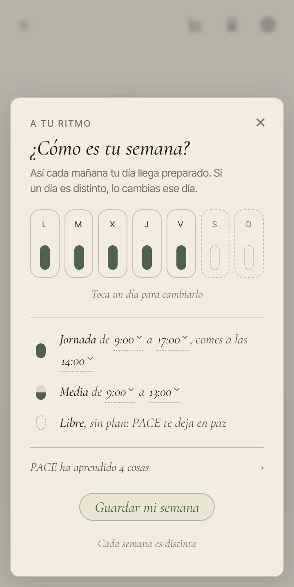<figcaption>«PACE ha aprendido 4 cosas ›»: al tocarla, la lista de A. Sin scroll hasta abrirla.</figcaption></figure>
        <figure class="e">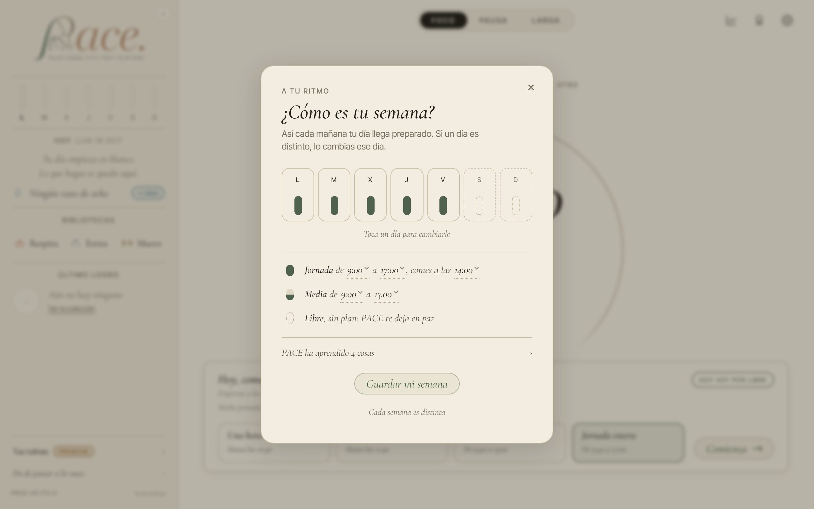<figcaption>1280 × 800.</figcaption></figure>
      </div>
    </div>
    <div class="reco"><span class="eti">Recomendación</span><span><b>B.</b> La hoja queda como está y no pide scroll; la lista sale cuando quieres mirarla.</span></div>
  </section>

  <section>
    <div class="eti">Lo que hace el motor</div>
    <h2>Lo que ya está montado y probado</h2>
    <ul>
      <li><b>Qué te sienta bien:</b> lo que te ayudó sale en la carta y vuelve antes; «Otra» no lo aparta. Lo que no te ayudó ya lo quita la pausa, gratis.</li>
      <li><b>Qué pausas saltas:</b> la pausa de la misma hora, saltada tres días sin reunión alrededor, sirve una rutina de 2 minutos.</li>
      <li><b>Qué cambias con «Otra»:</b> la rutina cambiada tres veces descansa un mes; si cambias casi todo Mueve, la semana trae más Estira.</li>
      <li><b>Tus horas:</b> tres días de la semana, o el mismo día dos semanas seguidas, a media hora o más: te lo pregunta.</li>
      <li>Hace falta que pase tres veces en la semana, o dos semanas seguidas. Como mucho dos cambios y 10 paradas. Lo que dejas como estaba no vuelve a proponerse en cuatro semanas.</li>
    </ul>
  </section>
</main>
